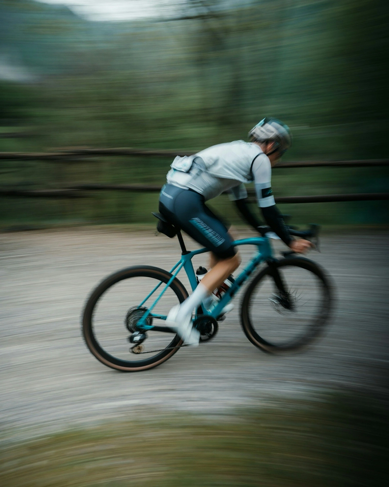
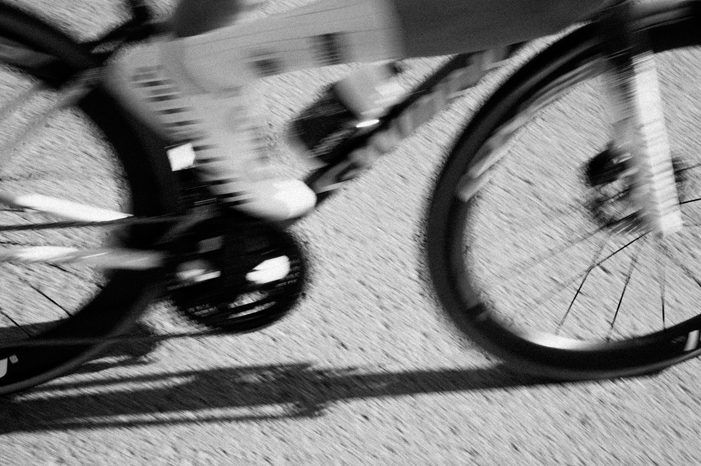

01
main fuel
Maltodextrin
Your main carbohydrate, made of glucose. It’s the base of every bottle. On its own, your body can use up to about 60 g of it an hour.I
MixRight
Your body. Your ride. Your mix. Dialled in every session. Perfected for the podium.
Get early accessThe idea01
Every bottle, mixed to the ride.Salt for hydration, carbs for power.
In training, most riders fall short.IIRace day is built on Tuesdays.Fuel them.
What does your ride look like today?
How much you need depends on how long you ride. Guidance is up to 30, 60 or 90 g of carbs an hour.I
The parts02
Four single ingredients. Each one does one job in your bottle.
Your main carbohydrate, made of glucose. It’s the base of every bottle. On its own, your body can use up to about 60 g of it an hour.I
A different sugar that takes a different route into your body. Paired with maltodextrin, it lets you go past 60 g an hour.I
Adds sodium, the main mineral you lose in sweat, with a milder taste than table salt.
A little tartness that cuts the sweetness, so a strong bottle stays easy to drink.
Together
01 Scoop02 Add water03 Shake
New to fuelling? Start with half, and let the coach build you up from there.
An example based on published guidance,I one 750 ml bottle an hour. Long-standing guidance puts sodium at about 0.5–0.7 g per litre, or 375–525 mg a bottle;IV heavy or salty sweaters may need more, and the coach works out your number from your sweat. Your own mix depends on you and your ride.
The price
We sell the ingredients themselves, in bulk bags with plain packaging. That keeps fuel affordable enough for every training ride, not just race day.
Price per 90 g of carbs
What an hour of fuel on a long ride costs today.
CAD, before tax and shipping. Each brand’s lowest-cost drink mix sold in Canada, at shelf prices checked on 26 October 2026. MixRight’s price comes at launch.
The coach03
Every rider burns, sweats and digests differently.



How long, how hard, the weather, and how salty you sweat.
Exactly what to scoop into each bottle, and how many bottles an hour.
A plan that raises your intake session by session, from your first bottle to race day. Plus a reminder before your bag runs out.
Up to 90 gper hour
An hour
The top of the guidance, for rides over 2.5 h.I
Two sugars
Past 60 g an hour, guidance pairs glucose with fructose.I
Built up
Reached session by session with the coach, not guessed on race day.
Clubs04
Coaches, teams and club organisers: tell us about your athletes, and we’ll be in touch about club orders before launch.
Register your club →Early access05
Join the waitlist and you’ll be first to order when we launch, with fuelling tips until then.
You’re on the list.
Check your inbox to confirm your email. Then, if you have 30 seconds, help us build it right. Every question is optional.
01 / 05
What do you ride or run?
Choose all that apply.
02 / 05
How many hours a week?
03 / 05
What do you fuel with now?
Choose all that apply.
04 / 05
What gets in the way of fuelling well?
Choose all that apply.
05 / 05
Would you use an app that works out your mix?
Thank you. That helps us build it right.
We’ll email you before we launch.
Know someone who fuels on Tuesdays?
We’ll set a date once production is confirmed. Waitlist members hear first.
We’re starting in Canada.
One ingredient. The bag names it in English and French, with the Nutrition Facts.
No. Every bag has a first-bottle recipe. The app works out your own mix and builds you up from there.
Portage Nutrition, a small team in Vancouver, BC.
Yes. We only buy food-grade ingredients (FCC or USP grade) from established suppliers.
10 bananas
3 pockets · 7 bananas to spare
A 3-hour ride at 90 g an hour.I Your jersey has three pockets.
Bananas are great. But that’s a LOT of bananas.
Get early access